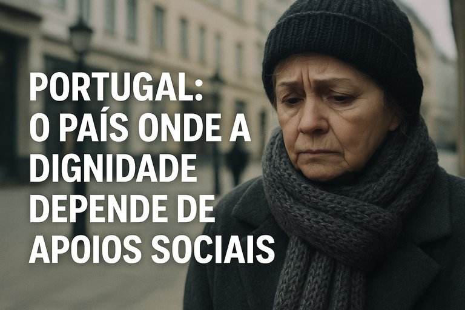

Publicado em 2025-06-06 13:03:01
Imagina acordares todos os dias com o coração apertado, a fazer contas entre o que há no frigorífico e o que sobra na carteira. Em 2024, mais de 1,7 milhões de portugueses não têm de imaginar. Vivem. Respiram a angústia de não saber como pagar a renda, como comprar os medicamentos, como encher o saco das compras.
Segundo o mais recente relatório da Nova SBE — “Portugal Balanço Social 2024” — dois em cada cinco portugueses seriam pobres se não recebessem apoios sociais. Esta é uma daquelas estatísticas que devia ecoar em cada ministério, em cada assembleia, em cada redação e em cada mesa de café.
Sem os apoios do Estado, mais de 4 milhões de pessoas viveriam abaixo do limiar da pobreza. Isto quer dizer que o que ainda mantém milhões de vidas fora do colapso não é a força do trabalho, nem o mérito individual — mas o fio ténue de subsídios, pensões e ajudas que evitam o abismo.
Por cada cidadão idoso que consegue pagar a farmácia, há uma pensão mínima por trás.
Por cada família que ainda serve carne na mesa, há um abono, uma prestação, um apoio temporário a sustentar.
O paradoxo é cruel: num país que diz querer combater a pobreza, o sistema económico continua a empurrar os mais fracos para a beira do precipício. O emprego existe, mas os salários continuam baixos. Os impostos pesam mais no recibo dos que menos têm. E a habitação — esse direito consagrado na Constituição — tornou-se um luxo inacessível para milhares.
Mas há quem se alegre: os números dizem que 200 mil portugueses saíram da pobreza em 2023. Isso é bom, sim. Mas também revela que a pobreza em Portugal não é uma condição estática, é um carrossel. Sai-se hoje, entra-se amanhã. E a bilheteira está sempre aberta.
É urgente mudar o rumo.
Não apenas continuar a transferir apoios para mitigar o problema, mas reformar o sistema que o causa. A começar por uma política fiscal mais justa, um mercado laboral que dignifique quem trabalha e uma habitação que não expulse os filhos da classe média para os subúrbios do desespero.
Se dois em cada cinco portugueses precisam de ajuda para não cair na pobreza, então a questão não é a carência dos cidadãos. É a falência moral do modelo que lhes foi imposto.
Artigo da autoria de Augustus Veritas in Fragmentos de Caos
"Portugal tornou-se, não por acaso, mas por omissão e conveniência, o país dos miseráveis — não apenas os que vivem com parcos rendimentos, mas os que já perderam a esperança de uma vida digna. Aqui, a pobreza não é um acaso social, é uma política de continuidade. Governa-se a medo, vive-se com vergonha, e sobrevive-se com esmolas travestidas de apoios sociais, enquanto os mesmos de sempre acumulam privilégios atrás das cortinas da democracia. A mediocridade instalou-se como sistema operativo do Estado. E quem ousa levantar-se, arrisca-se a ser triturado pela máquina kafkiana da burocracia ou silenciado pela máfia do compadrio político-partidário."